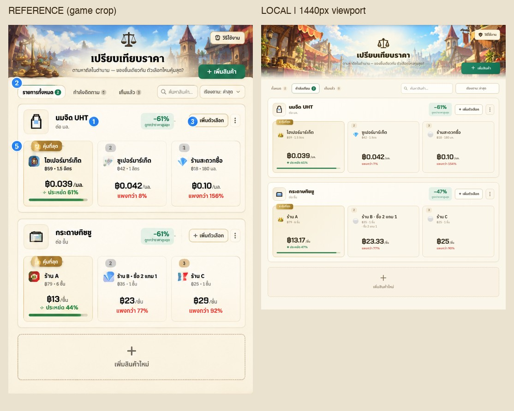
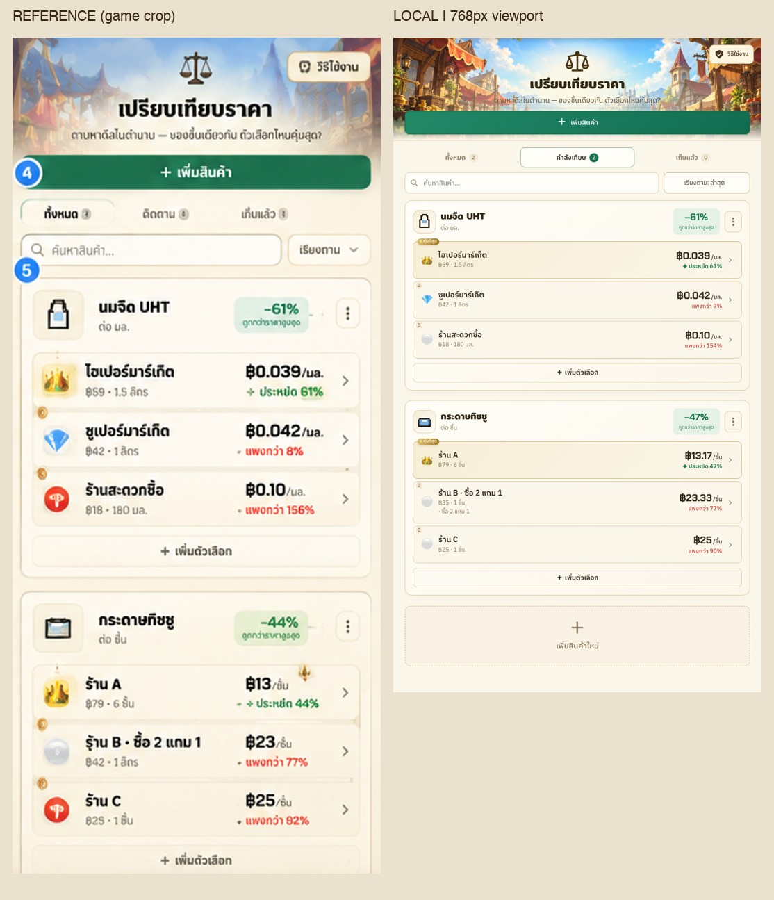
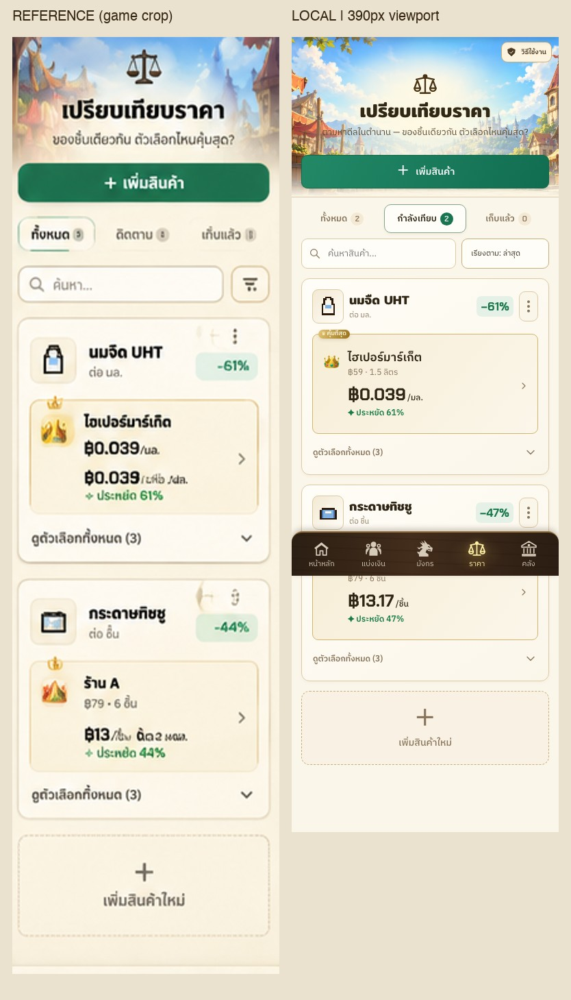
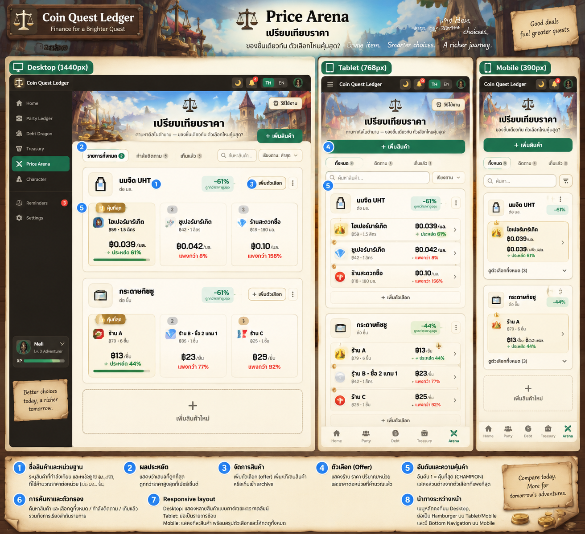

Price Arena
Local implementation · 1440 / 768 / 390 px · Tavern & Dungeon · Thai / English
Reference crops exclude the presentation, device frame and sidebar. Each pair uses the same display width and preserves image proportions. The shared global navigation is retained. Sample numbers are calculated from real fixture inputs.
Desktop

Actual before and after · same local fixture
Tablet

Actual before and after
Mobile

Light and dark · full mobile page
Full supplied reference
